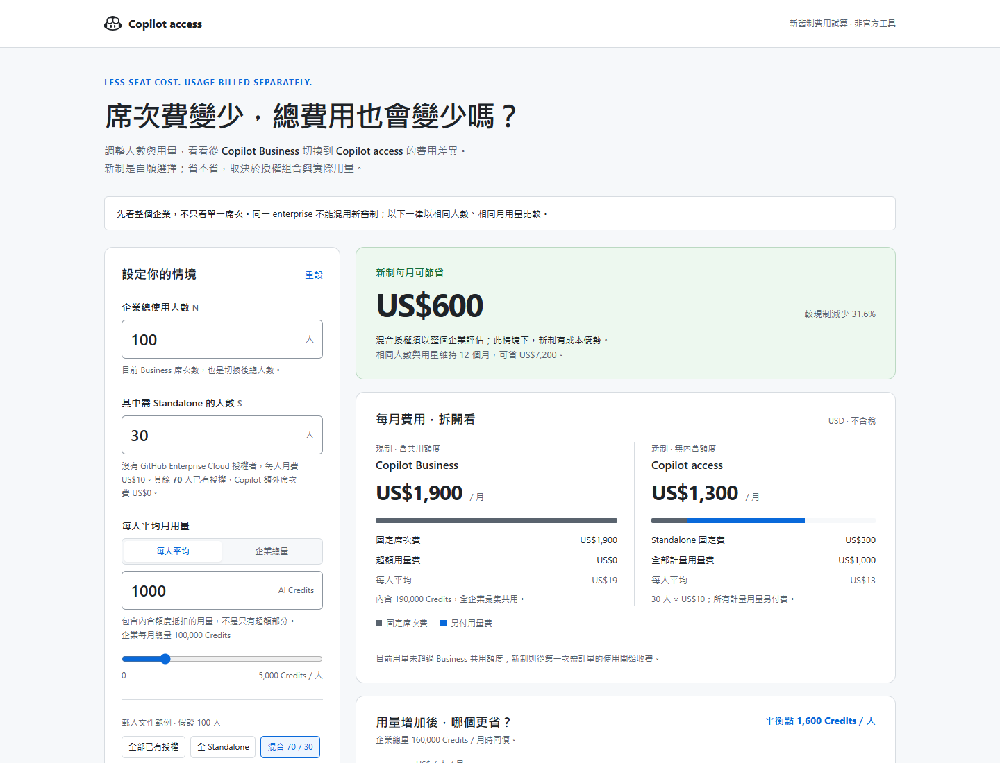

同一份試算，三種閱讀方式。
三版皆可互動、可離線開啟，使用相同計價公式與文件說明。點圖片查看大圖，或開啟完整初稿調整數字；選定後再將該方向作為正式單頁。畫面均為 100 人、30 人 Standalone、平均 1,000 Credits 的假設情境。
三版皆可互動、可離線開啟，使用相同計價公式與文件說明。點圖片查看大圖，或開啟完整初稿調整數字；選定後再將該方向作為正式單頁。畫面均為 100 人、30 人 Standalone、平均 1,000 Credits 的假設情境。